2026-11-02 · Sixteen native GamePanel captures: existing developer chamber and generated city. Matching aisle before/after includes clutter lighting. Elevated viewpoints are labeled inspection cameras.
Notes, actual piece inventory and validation · System specification and next architectural layers
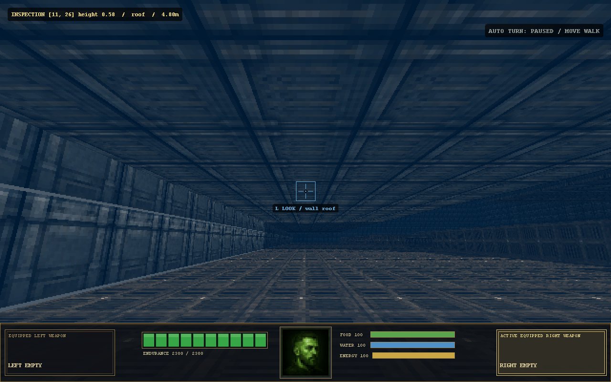
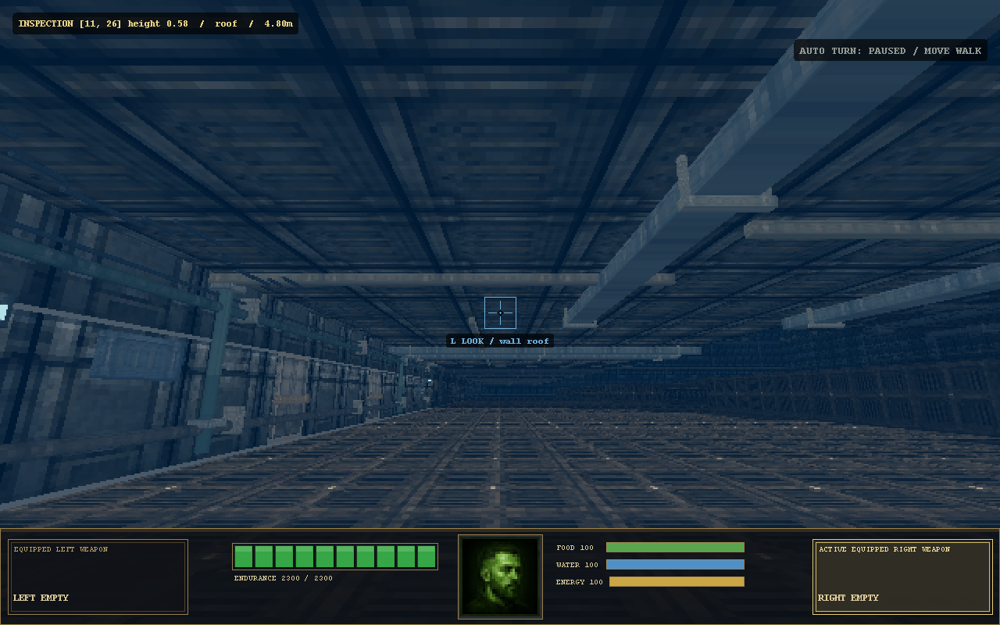
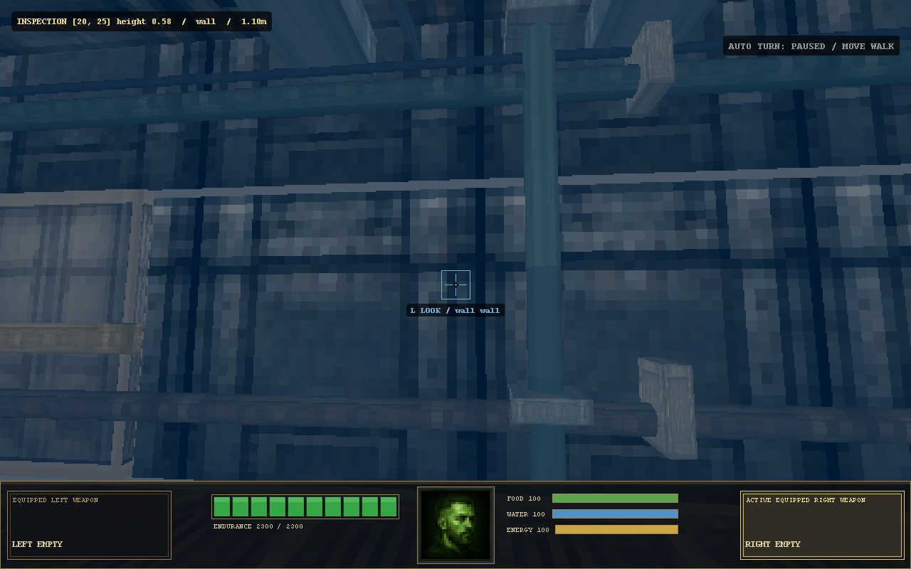
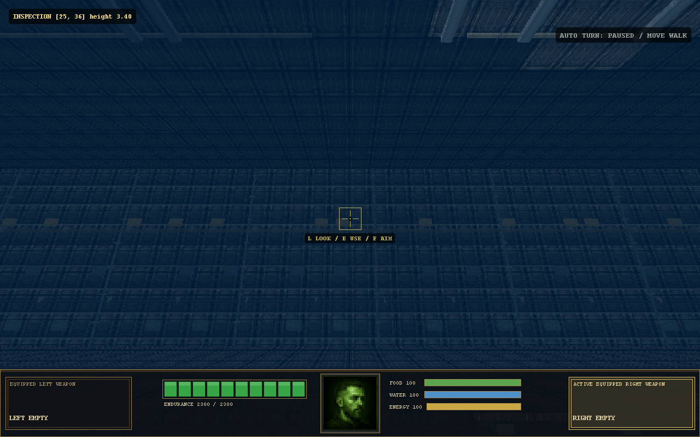
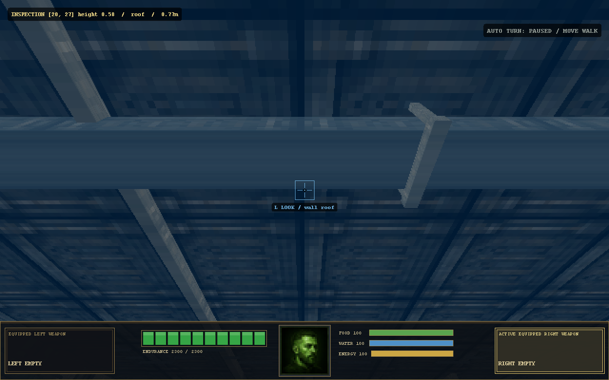
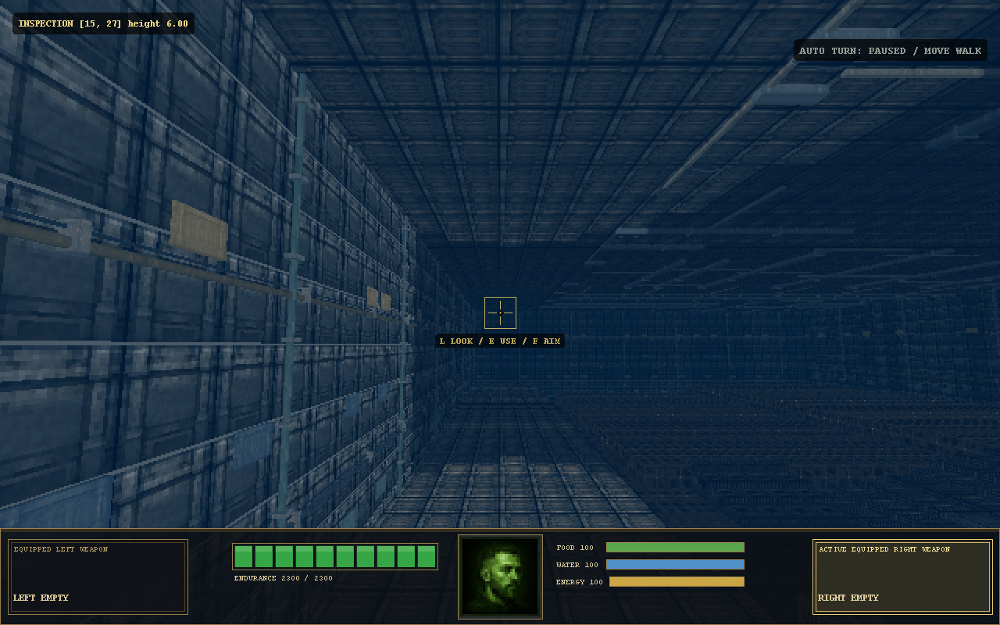
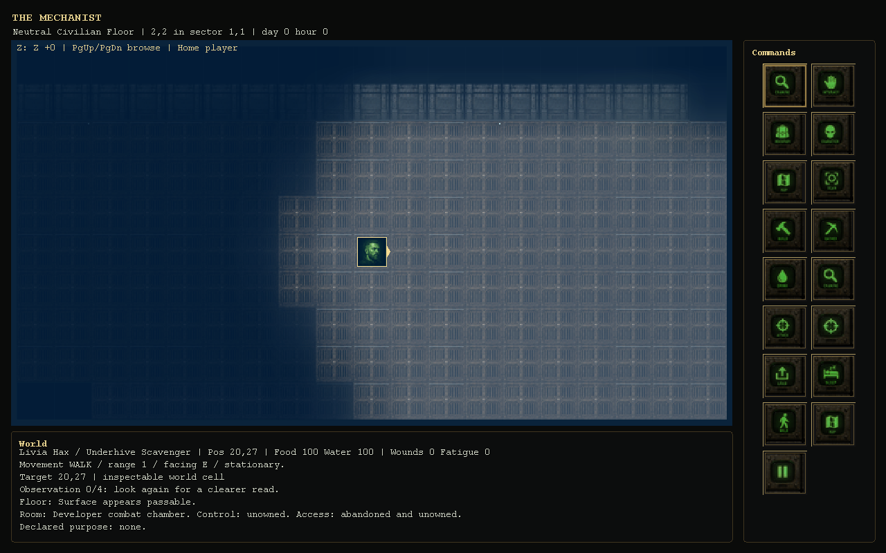
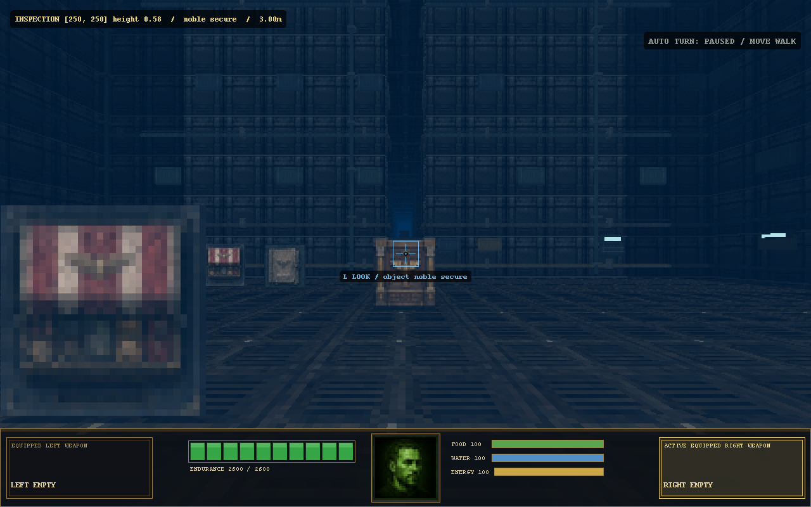
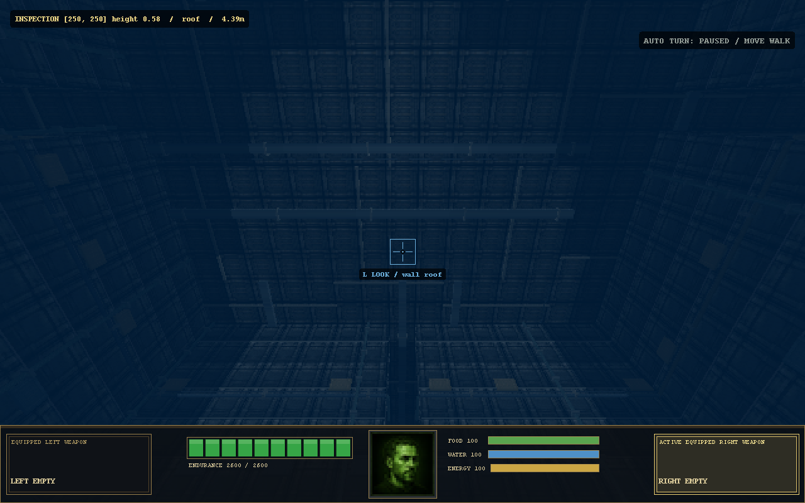
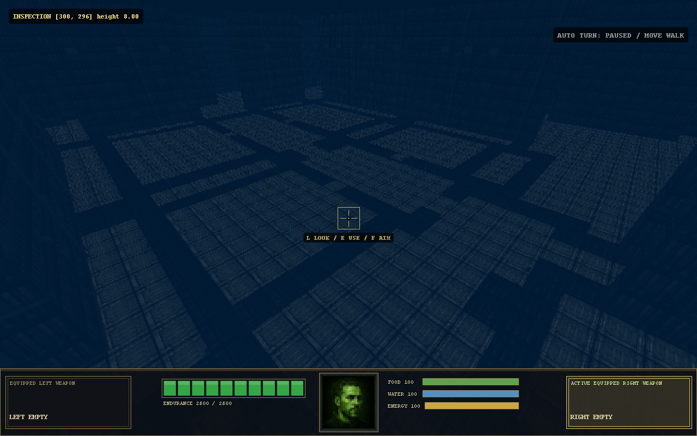
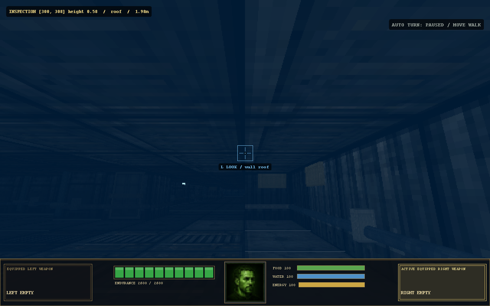
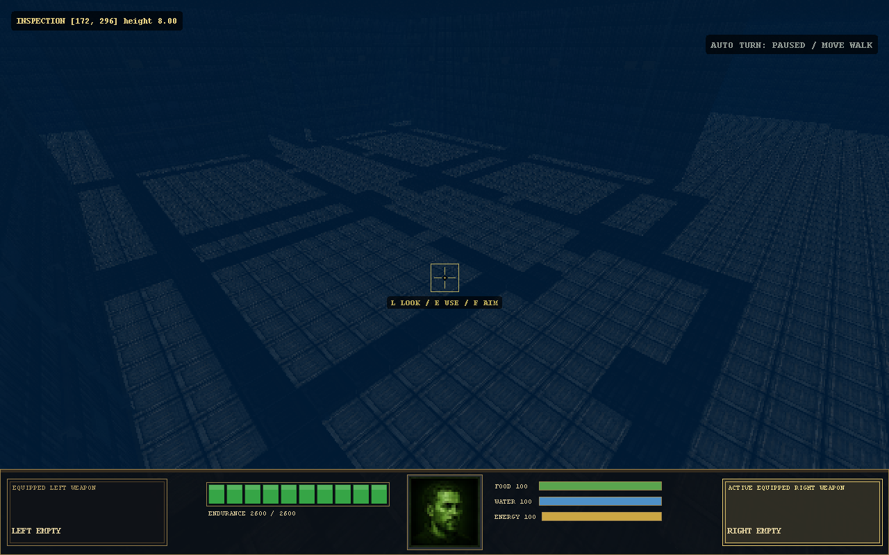
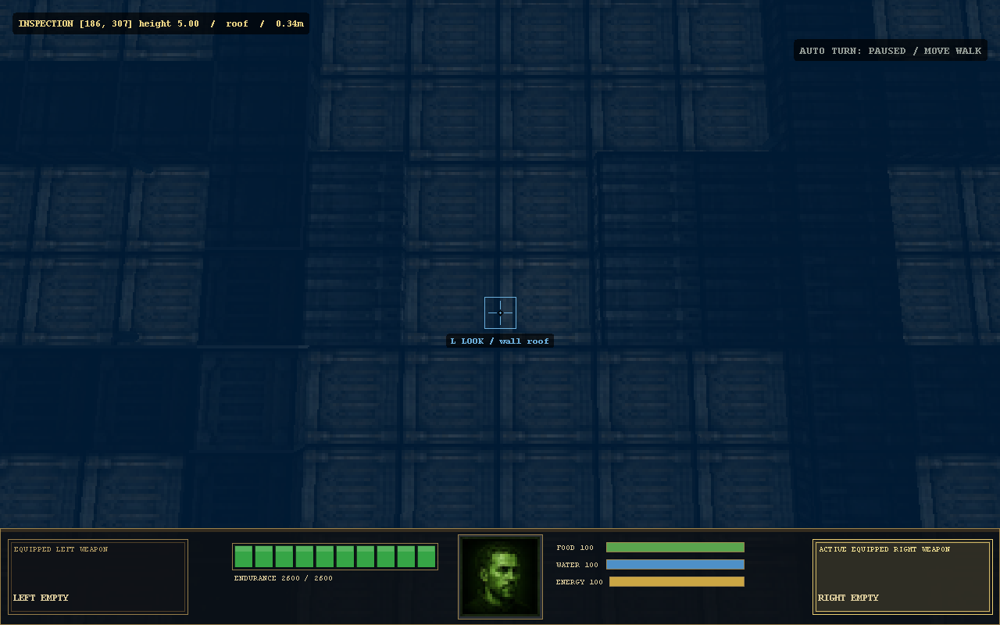
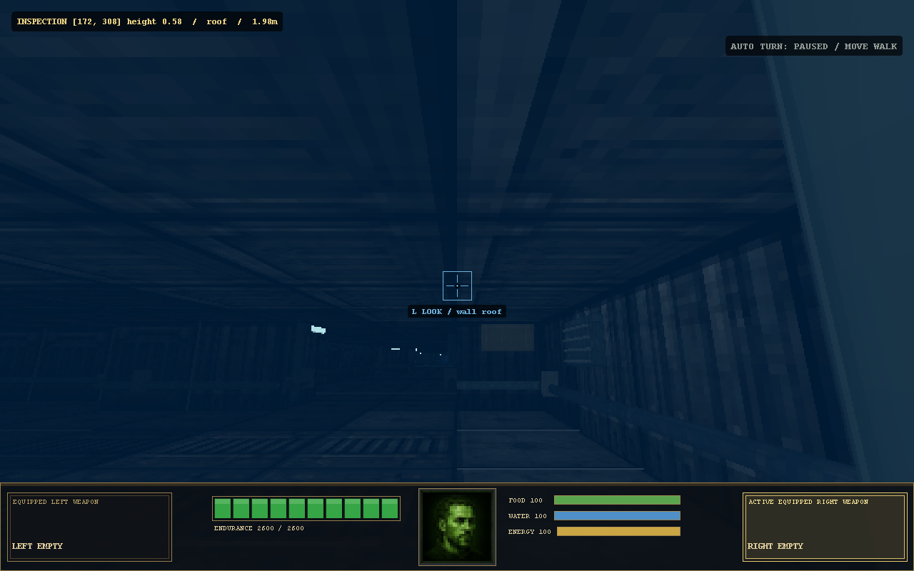
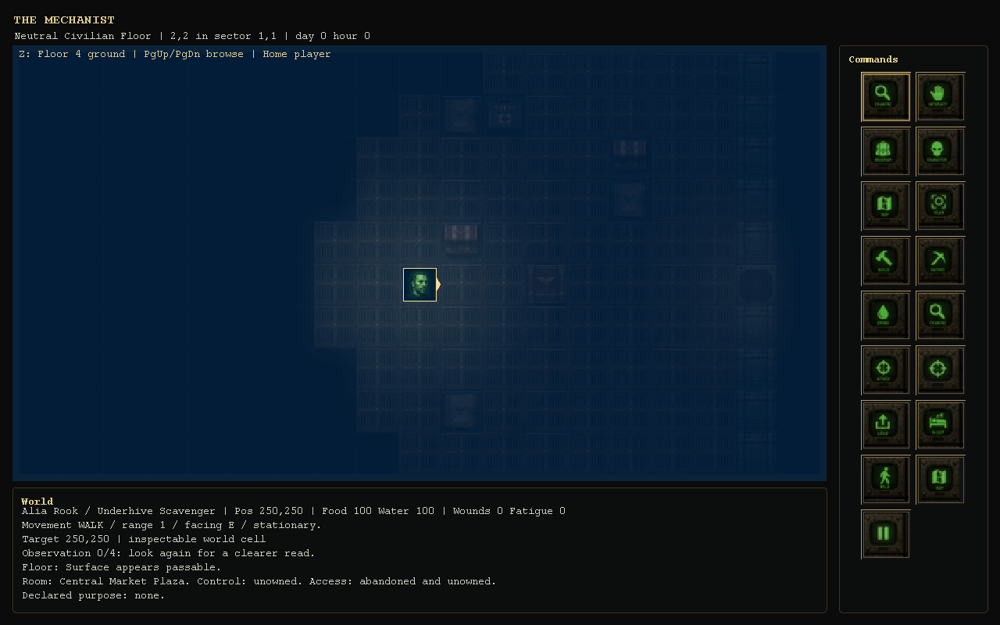